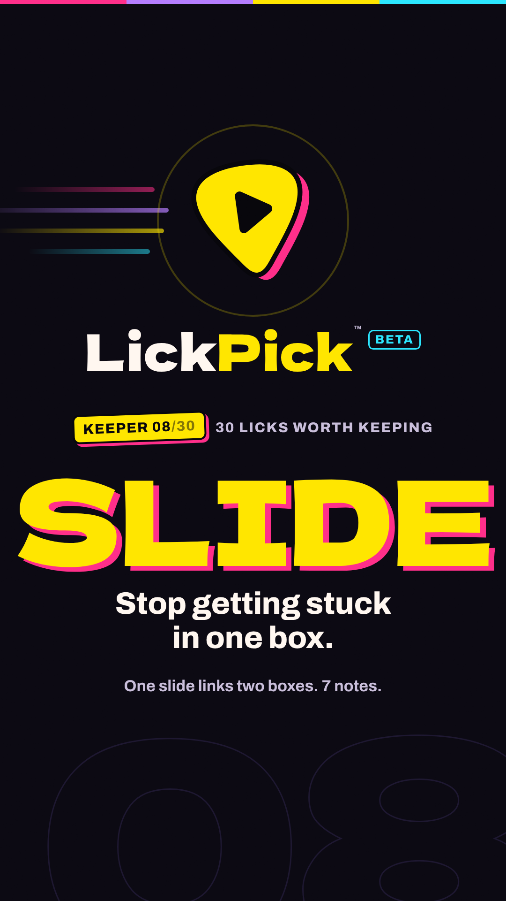
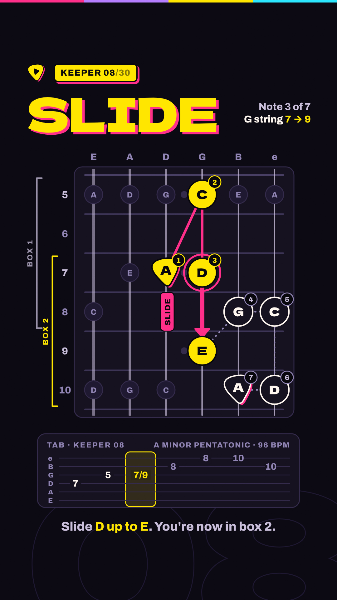
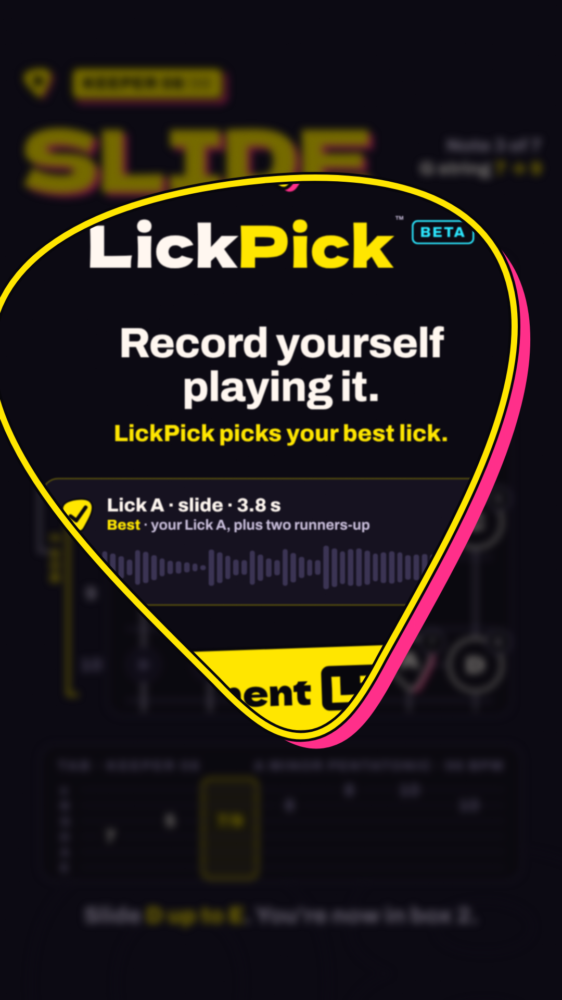
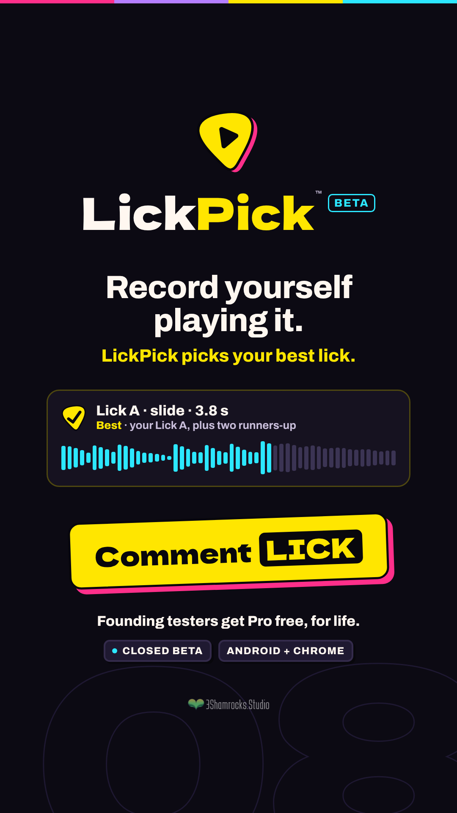

Needs your eyes
This is a style test, not a new reel. Approve the direction here first. After that, episodes get rebuilt in this style. The example is episode 8 (SLIDE). Nothing here is posted anywhere.




What you'll hear, in order:
1. A soft rising swell while coloured light lines come in and draw the pick.
2. A deep, soft hit with a strummed A-minor guitar chord as the logo lands.
3. A light shimmer as the name appears.
4. A whoosh as the pick grows and opens.
5. A soft landing with two guitar notes, then a small click on the button.
All of these sounds were made in code, so we don't need any outside samples or licences. The volume matches what Instagram expects, and nothing distorts.
| Before (ep08 now) | After (v2) | |
|---|---|---|
| Opening | The title just appears. You only see the logo in the last 7 seconds, and it shows up faded. | The logo is drawn and lands with a hit in the first 1.5 s. The series name and the hook show with it, not after it. |
| Is the idea clear? | It's hard to tell what the series is or what you'll get. | "30 Licks Worth Keeping" up front, plus one line on what this lick teaches. |
| Lesson | A small sideways fretboard uses about a fifth of the screen, and the bottom half is empty. | An upright fretboard that takes up twice as much of the screen height, with numbered notes, the slide arrow, and the tab right under it. |
| Transitions | Hard cuts, and a flat colour wipe with a grey gap before the end card. | The pick logo opens onto the next scene. Everything eases in and out with motion blur, and nothing pops on. |
| Sound effects | Simple beeps and pops, mostly flat in the middle of the stereo field. | A swell, a deep soft hit, a guitar strum, a whoosh that moves left to right, and room echo. They're mixed to sit together. |
| End card | A lot of small text, with the logo faded in. | A full logo, one big button, and two short facts. The text is larger and stays clear of Instagram's buttons. |
NEEDS YOUR EYES
The biggest sound upgrade is real guitar. Right now the licks are played by a computer guitar sound, and that is what makes them sound cheap. If you record each lick yourself (phone or interface is fine, 7 notes, a few tries), we'd use your playing instead. That's on-brand too, because it's exactly what LickPick is for. If you'd rather not, we keep the computer guitar and improve it as much as we can.
Two smaller choices: (1) are you OK with the upright fretboard? It's bigger on a phone, but some players are used to the sideways view. (2) Is the pick-opening transition right for every scene change, or should it only lead into the end card?